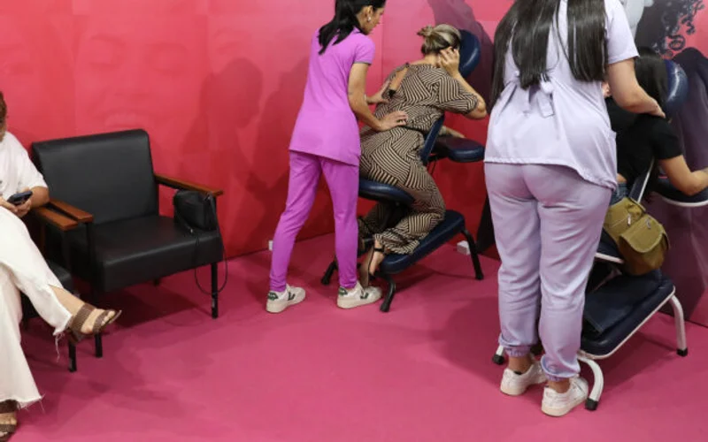
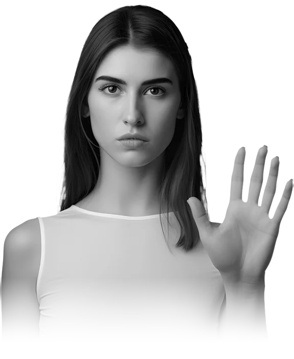
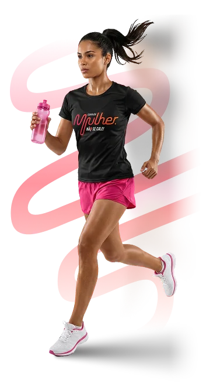
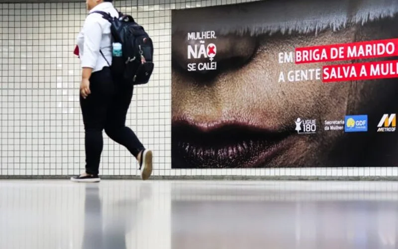
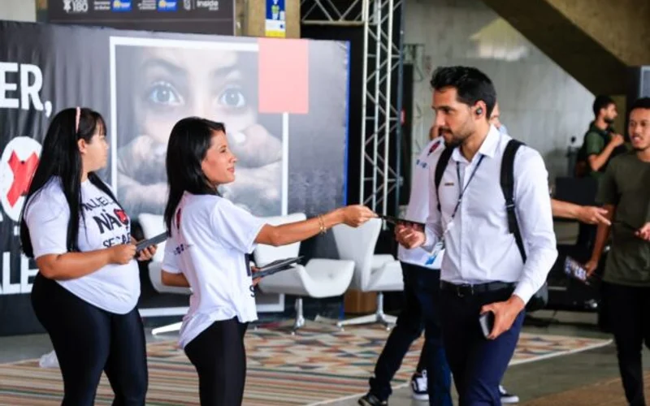
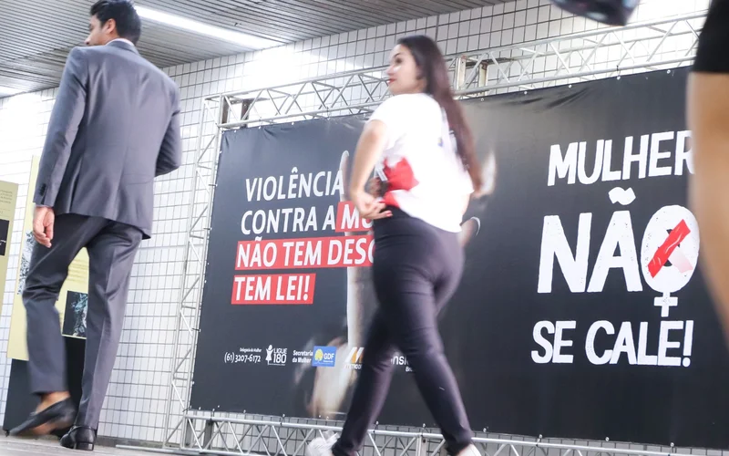
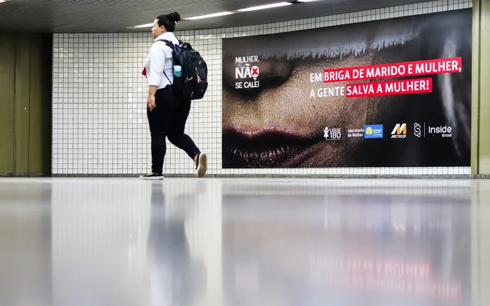
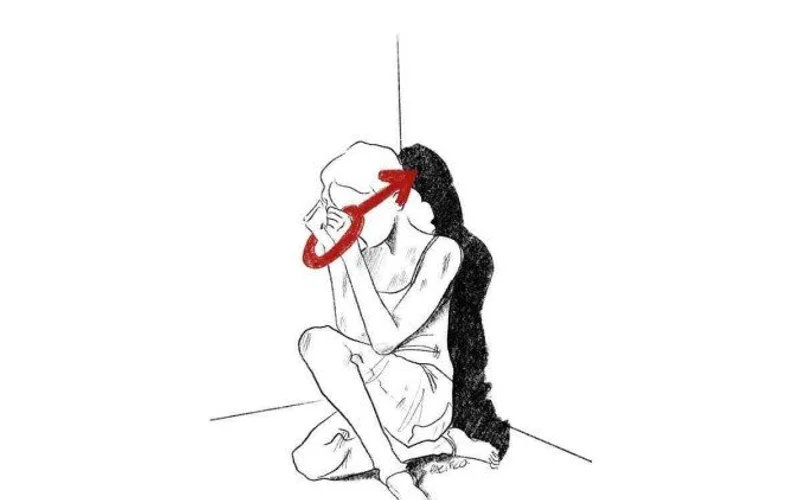
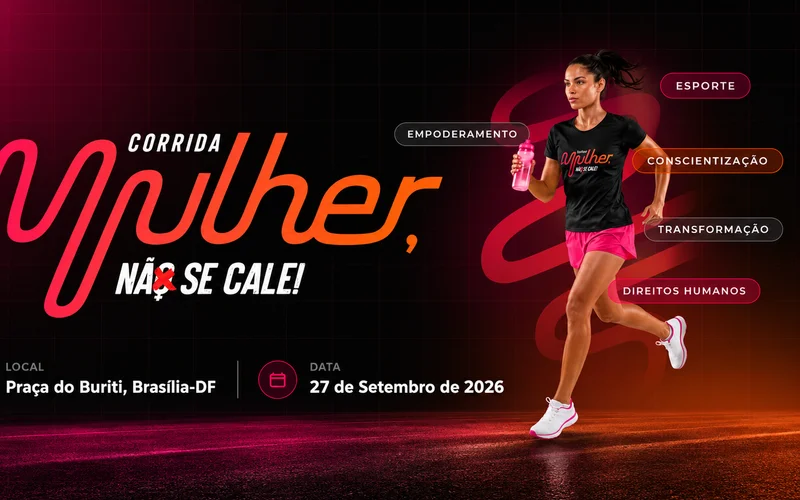

Conscientização e orientação na Estação Praça do Relógio
Cobertura da passagem da quarta edição por Taguatinga, com ações educativas e orientação ao público.
Ler reportagemUm movimento permanente do Instituto Inside Brasil
Uma mulher é vítima de violência doméstica a cada 4 horas no Brasil. Juntos podemos mudar essa realidade.


Encontre canais oficiais de atendimento, denúncia e proteção.
Ver onde buscar ajudaAprenda a reconhecer as diferentes formas de violência e saiba como apoiar alguém.
Acessar conteúdosDoe, seja voluntário, torne-se parceiro ou ajude a divulgar.
Participar do MovimentoCada rosto, uma história
O Movimento Mulher, Não Se Cale! existe para que nenhuma mulher precise enfrentar a violência em silêncio. Juntas, somos mais fortes.
Preciso de ajuda
O Mulher, Não se Cale! nasceu para levar informação sobre prevenção e enfrentamento à violência contra a mulher aos locais de grande circulação do Distrito Federal. Desde 2022, o movimento realiza campanhas educativas, ações presenciais, atividades de conscientização, pesquisas, produção de materiais e articulações com órgãos públicos, empresas e organizações da sociedade civil.
Entre 2022 e 2026, o Mulher, Não se Cale! ocupou estações de metrô, terminais rodoviários, feiras e outros espaços de grande circulação do Distrito Federal, levando informação, orientação e conscientização para milhares de pessoas.
Transparência começa mostrando o que foi realizado.
Produção e distribuição de conteúdos claros para ajudar a reconhecer formas de violência e conhecer direitos.
Atividades em metrôs, terminais, feiras, comunidades e locais de grande circulação.
Pesquisas e abordagens educativas que aproximam a sociedade do tema.
Articulação entre poder público, empresas, organizações, profissionais e voluntários.
Atividades capazes de ampliar o alcance da mensagem, como a Corrida Mulher, Não Se Cale!.
Informações, vídeos, notícias, materiais para download e orientação para acesso à rede oficial.
Controle, humilhação, ameaças, isolamento, retenção de dinheiro e exposição da intimidade também podem ser formas de violência. Conhecer os sinais ajuda a reconhecer situações de risco e buscar orientação. Segundo o artigo 7º da Lei nº 11.340/2006 (Lei Maria da Penha), são formas de violência doméstica e familiar:
Forçar ou intimidar a mulher a uma relação sexual não desejada, atos que constranjam a presenciar, manter ou participar de relação não desejada.
Bater, empurrar, cortar, puxar cabelo, atirar objetos. Qualquer conduta que ofenda a integridade ou saúde corporal da mulher.
Retenção, subtração ou destruição de objetos, documentos pessoais, bens, valores e recursos econômicos da mulher.
Intimidar, constranger, manipular e explorar. Qualquer conduta que cause dano emocional e diminuição da autoestima.
Caluniar, difamar ou injuriar. Acusar de traição, emitir juízos morais, fazer críticas mentirosas ou desvalorizar a vítima.
Qualquer forma de violência cometida contra filhos, pais, dependentes, enteados, parentes ou pessoas da rede de apoio da mulher, com o objetivo de atingi-la e causar-lhe sofrimento.
Se você sofre ou conhece alguém que sofre algum tipo de violência, não fique em silêncio.
Preciso de ajudaExistem serviços públicos preparados para orientar, receber denúncias e prestar atendimento.
O Movimento Mulher, Não se Cale! realiza ações de informação e conscientização. Não substituímos serviços de emergência, segurança pública, saúde, assistência social, atendimento jurídico ou psicológico.
Em 27 de setembro de 2026, Brasília recebeu a primeira Corrida Mulher, Não Se Cale!, com largada e chegada na Praça do Buriti. Obrigada a todas as pessoas que fizeram parte desse movimento. A corrida passou, mas a causa continua.

Acompanhe a cobertura de cada edição do movimento. As matérias da corrida estão reunidas em uma aba própria.

Cobertura da passagem da quarta edição por Taguatinga, com ações educativas e orientação ao público.
Ler reportagem
A reportagem apresenta a edição realizada em parceria com o Instituto Inside e o Metrô-DF.
Ler reportagemO portal destaca a presença da iniciativa nas feiras e a parceria com o Instituto Inside Brasil.
Ler reportagem
A matéria acompanha a preparação da edição nas feiras, com informação, mobilização e recursos de realidade virtual.
Ler reportagemReportagem sobre o lançamento da fase nos terminais, na Rodoviária do Plano Piloto, em dezembro de 2023.
Ler reportagem
A publicação apresenta a fase de dezembro de 2023 a fevereiro de 2024 e os locais previstos para as ações.
Ler reportagem
Registro do lançamento no Metrô-DF, em setembro de 2023, e das ações planejadas para outras estações.
Ler reportagem
A notícia apresenta o lançamento do projeto e sua proposta de levar informação aos usuários do transporte público.
Ler reportagem
Cobertura publicada antes da corrida de 27 de setembro de 2026, destacando sua relação com a causa.
Ler reportagemSua contribuição ajuda o Instituto Inside Brasil a fortalecer as ações permanentes do Movimento Mulher, Não Se Cale!, produzir conteúdos educativos, realizar mobilizações e levar informação a novos espaços.
Ambiente seguro • Valor livre • Prestação de contas • Doação voluntária
Contribua com tempo, experiência e presença.
Empresas e instituições podem apoiar ações e projetos.
Promova uma ação educativa em sua empresa, escola ou comunidade.
Ajude conteúdos confiáveis a chegar a mais pessoas.
Realização permanente: Instituto Inside Brasil. Parceiros institucionais da quarta edição: Secretaria da Mulher do DF, Metrô-DF e Semob.
Informação com clareza
É uma iniciativa permanente do Instituto Inside Brasil que leva informação, conscientização e mobilização social para prevenir e enfrentar a violência contra a mulher no Distrito Federal.
As ações acontecem no Distrito Federal, em estações do Metrô-DF, terminais rodoviários, feiras, comunidades e outros espaços de grande circulação.
Não. O movimento realiza ações de informação e conscientização. Não recebe denúncias e não substitui atendimento policial, jurídico, psicológico, de saúde ou de assistência social. Procure os canais oficiais da rede de atendimento.
O Ligue 180 orienta sobre direitos e serviços da rede de atendimento, registra e encaminha denúncias. É gratuito e funciona 24 horas, todos os dias. Em uma emergência ou situação de risco imediato, acione a Polícia Militar pelo 190.
Sim. A primeira edição foi realizada em 27 de setembro de 2026, na Praça do Buriti, em Brasília. As inscrições dessa edição estão encerradas. Acompanhe os canais oficiais para novidades do movimento.
Você pode divulgar informações, atuar como voluntário, apoiar como parceiro ou contribuir com as ações do Instituto Inside Brasil. Conheça as formas de participar e os canais institucionais disponíveis neste site.
Fontes para orientação: Ministério das Mulheres — Ligue 180 e Secretaria da Mulher do DF. Informações do movimento: Instituto Inside Brasil.